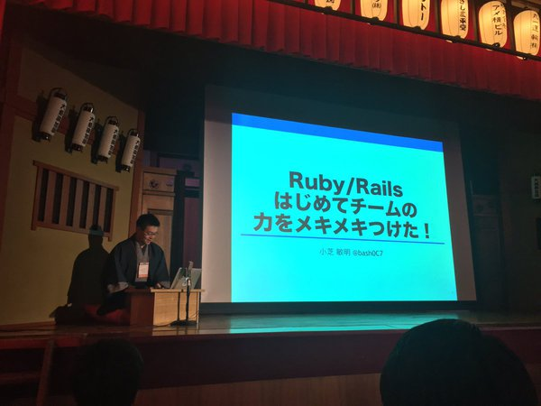
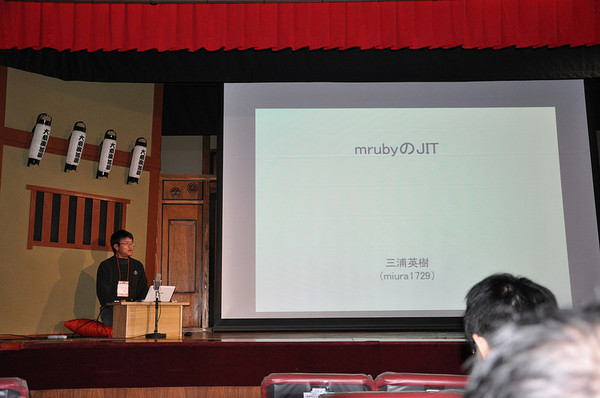

RegionalRubyKaigi レポート (62) 名古屋Ruby会議03
RegionalRubyKaigiレポート 名古屋Ruby会議03
- 開催日時 - 2017年02月11日 10:00-18:30
- 開催場所 - 大須演芸場
- 主催 - Ruby東海
- 後援 - 一般社団法人 日本Rubyの会
- 公式サイト - http://regional.rubykaigi.org/nagoya03/
- 公式ハッシュタグ - #nagoryark03
はじめに
小雪がちらつく中、2017年02月11日に開催した名古屋Ruby会議03についてレポートします。

名古屋Ruby会議03は、6年ぶりの開催になります。「Rubyを再発見」をテーマに日本3大演芸場の1つ大須演芸場で開催しました。
プログラム
前座LT
寄席らしく、出囃子の太鼓の音が響く中、初めは、前座として、LTを2本でした。
| 登壇者 | タイトル |
| @jacoyutorius | RubyFriends |
| @yasulab | Coder DojoとRails CMS |
午前の部
前座で場が暖まり、午前の部が始まりました。
Ruby/Railsはじめてチームの力をメキメキつけた！

- 発表者
- 小芝 敏明 (@bash0C7)
- 資料
ぺろぺろ: Github pull request bot framework

- 発表者
- mzp (@mzp)
- 資料
招待講演 Apache ArrowのRubyバインディングをGObject Introspectionで

- 発表者
- 須藤 功平 (@ktou)
- 資料
午後の部
スポンサー様のLT3本の後、午後の部が始まりました。
mrubyのJIT

- 発表者
- 三浦 英樹 (@miura1729)
- 資料
Dynamic certificate internals with ngx_mruby

- 発表者
- 奥村 晃弘 (@hfm)
- 資料
未来のサーバ基盤への Haconiwa/mruby の関わり - コンテナ仮想化のその先へ

- 発表者
- 近藤 宇智朗 (@udzura)
- 資料
Ruby で TensorFlow

- 発表者
- antimon2 (@antimon2)
- 資料
Fight with growing data on Rails

- 発表者
- joker1007 (Tomohiro Hashidate) (@joker1007)
- 資料
招待講演 re: rinda

- 発表者
- 関 将俊 (@m_seki)
- 資料
大喜利
再び、スポンサー様のLT3本の後、寄席らしい最後のプログラムとなる大喜利でした。

- 回答者
- mzp
- 須藤 功平
- 関 将俊
- 司会
- Dominion525 (@Dominion525)
さいごに
6年ぶりということで、名古屋らしく他の地域 Ruby 会議では、開催したこと無いような場所ということで、大須演芸場で開催してみました。寄席ということで、演者の 方々には、正座で発表という無茶をして頂きました。公演中、足がしびれたりしたり といったトラブルもありましたが、楽しんで頂けたようでした。また、来て頂いた方 にも好評のようでした。それが、実行委員として、何よりでした。
謝辞
名古屋 Ruby 会議03のスポンサーとして以下の6社様には、多大なご協力を頂きました。実行委員一同、感謝申し上げます。
（順不同、敬称略）
書いた人
- かたぎり えいと （@eitoball）Ruby東海所属。Ruby大好きですが、Elixirにも浮気しています。